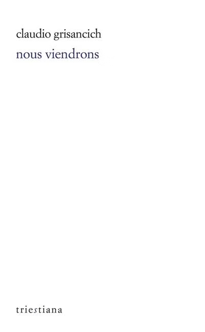

Claudio Grisancich, Nous viendrons
En 1955, Anita Pittoni reçoit, dans son prestigieux salon de Trieste, place de la Bourse, un adolescent, Claudio Grisancich, qui lui avait adressé ses premiers poèmes. Deux ans plus tard, dans le même salon, où se réunissent les plus grands écrivains, celui qui n’est pas encore majeur lit des pages de Nous viendrons. La maîtrise de son art, atteinte d’emblée, la pureté de ses thèmes et de ses rythmes, la liberté de son expression et son élan suscitent une reconnaissance immédiate. Au terme de la lecture, Giani Stuparich se lève et, s’approchant de l’auteur, lui pose une main sur l’épaule : « Bravo. » Et Anita Pittoni de relater : « Rien de plus, et c’était tout. »
Date de parution : octobre 2025
Traduit du triestin par Laurent Feneyrou et Pietro Milli
Préface de Claudio Grisancich et d'Anita Pittoni
298 pages
Prix : 22€